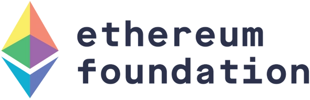

Welcome to the Tsinghua CryptoEconomics Lab. Our mission is to bridge the worlds of cryptography and economics to explore the emerging challenges and opportunities in the field of digital assets, decentralized finance, and blockchain technology.
Our Projects are currently supported by the grants from Ethereum Foundation.
For more information about our research, events, or collaborations, please reach out to us: cryptoeco-lab (at) protonmail.com